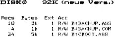

80-Bus Journal |
Okt./Nov./Dezember 1984 · Ausgabe 4 |
| Artikel | Netto | Add On | Porto/Verpack. | 14% MWSt | Gesamtpreis | |
| Disk0 | 13.54 | – – – | 4.00 | 2.46 | 20.00 DM | |
| Disk1 | 9.16 | – – – | 4.00 | 1.84 | 15.00 DM | |
| Disk2 | 9.16 | – – – | 4.00 | 1.84 | 15.00 DM | |
| Disk3 | 9.16 | – – – | 4.00 | 1.84 | 15.00 DM | |
| Disk4 | 9,16 | – – – | 4.00 | 1.84 | 15.00 DM | |
| Disk5 | 9.16 | – – – | 4.00 | 1.84 | 15.00 DM | |
| FDC | 43.40 | 2 Proms 14.00 | 4.00 | 8.60 | 70.00 DM | |
| 80 Z K | 53.02 | – – – | 4.00 | 7.98 | 65.00 DM | |
| Grafik | 46.52 | 1 Prom 6.50 | 4.00 | 7.98 | 65.00 DM | |
| Adapter | 53.02 | mit Goldkont. | 4.00 | 7.98 | 65.00 DM | |
| Busverl. | 22.32 | – – – | 4.00 | 3.68 | 30.00 DM | |
| CPU | 48.63 | – – – | 4.00 | 7.37 | 60.00 DM | |
| 256K RAM | 48.63 | – – – | 4.00 | 7.37 | 60.00 DM | |
| Centronix | 53.02 | – – – | 4.00 | 7.98 | 65.00 DM | |
| Eprommer | 48.63 | – – – | 4.00 | 7.37 | 60.00 DM | |
| EPROMPort | 48.63 | – – – | 4.00 | 7.37 | 60.00 DM | |
| PIO/SIO | 48.63 | – – – | 4.00 | 7.37 | 60.00 DM | |
CP/M 2.2 führen wir nicht mehr, da es anderweitig inzwischen viel preisgünstiger zu beziehen ist. Dafür liefern wir eine Diskette mit den Programmen, die für die Anpassung notwendig sind für DM 15.– (CP/M-Disk). Bei Zusendung einer Original-CP/M Diskette mit Lizenznummer führen wir die Anpassung für weitere DM 5.– auch gerne selbst durch. (Sie erhalten dann Ihr CP/M im .NAS- Format, welches Sie auch mit EMDOS laden können).
Zudem sind weiterhin der Jahrgang 1983 des Journals (10 Hefte incl. 2 Doppelhefte) und das Abonnement 1984 lieferbar. Preis jeweils DM 60.– incl. Porto, Verpackung und Mehrwertsteuer. Für Auslandslieferungen bleibt der Pauschalpreis gleich. (Stichwort ABO83 oder ABO84).
Sonderservice für unsere holländischen Leser aus dem NGGC: Nachlieferung der ersten beiden Ausgaben des Journals 1984 (zwei Doppelnummern) incl. Porto, Verpackung DM 20,– (Stichwort: Nachlieferung).
Da wir unsere Artikel knapp kalkulieren, müssen wir immer die Pauschalpreise berechnen. (Das erleichtert auch unsere Buchhaltung erheblich). So kann z.B. die Grafikkarte nicht ohne PROM bezogen werden, und auch bei gleichzeitiger Sendung von zwei Karten oder Disketten schließen wir die jeweilige Portopauschale ein. Überweisen Sie zur Bestellung den entsprechenden Gesamtbetrag mit dem Stichwort und Ihrer Anschrift. Es entstehen keine weiteren Kosten.
Die folgenden beiden Karten wurden von einem Leser in eigener Regie als durchkontaktierte Serie in Auftrag gegeben (sehr lobenswert).
Kansas City/Tastaturkarte
(9-83 S.18)
Video 48X16
(7-83 S.29)
Beide Karten sind für DM 60.– inkl. zu. beziehen durch:
Herrmann Cropp
________ ____
____ Osnabrück
Nachfolgende Karten liegen zunächst als ECB-Layout vor und werden nach Eingang von mindestens zehn Bestellungen als Serie hergestellt. Preis wie gehabt DM 60.– inkl. MWSt, Porto und Verpackung. Bitte hierfür keine Vorauskasse, da nicht sicher ist, ob Serienfertigung folgt.)
Busterminierung (Heft 4/84)
Buszustandsanzeige (Heft 2/84)
Netzteil (Heft 3/84)
Gleichrichterkarte (Heft 4/84)
24K RAM/EPROM
Erweiterungskarte (Heft 2/84 und
3/84)
Hardwareuhr
und Soundgenerator (Soundgenerator in
4/84)

| Seite 4 von 52 |
|---|